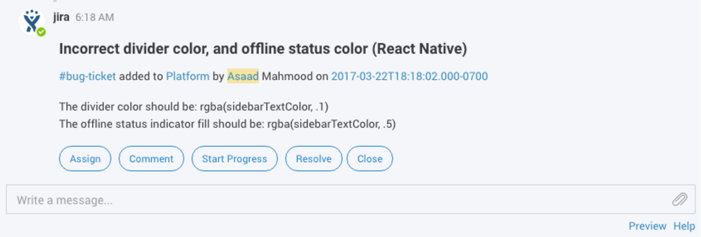
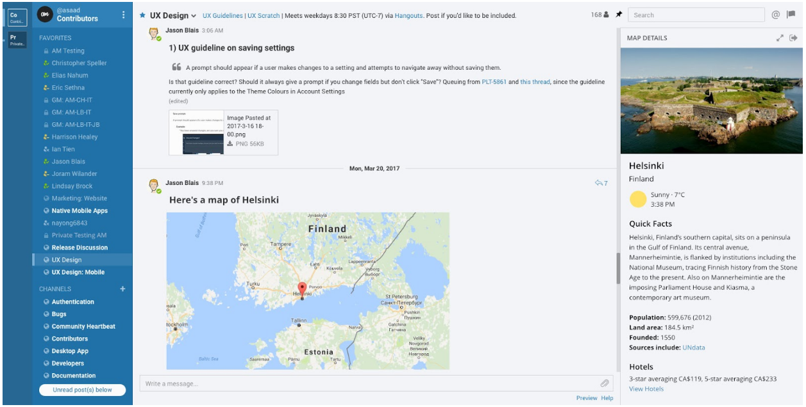
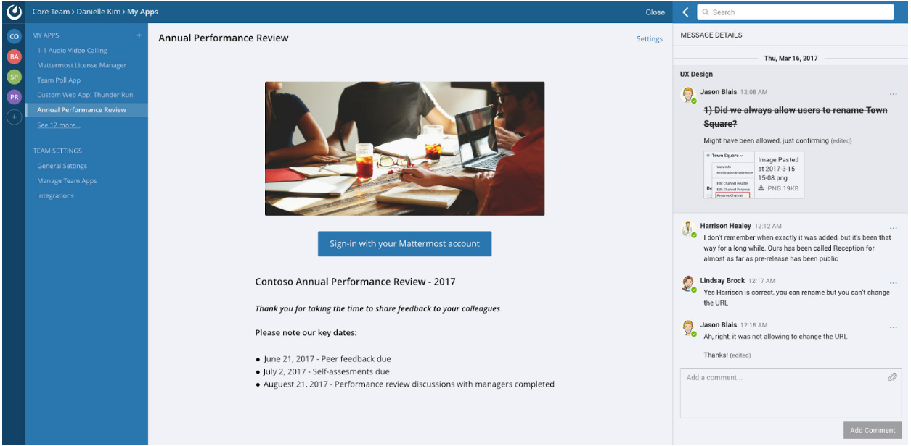

Mattermost Developer Toolkit¶
More Power for Developers¶
This document is a work in progress, summarizing developer toolkit capabilities currently under development.
The Mattermost Developer Toolkit gives community and in-house customer developers the power to integrate deeply with, and extend, Mattermost servers and clients in order to meet their particular requirements - without “reinventing the wheel”. We are still in the early stages of architecting the toolkit so what follows is a non-definitive list of the features we would like to offer.
If you have ideas on additional features that you would like to see in our Developer Toolkit, please get in touch.
Better Control for System Admins¶
The main benefits of the Mattermost Developer Toolkit from a system administration perspective are first, that it puts all of the resources and information that developers will need in one central location and second, it simplifies integrations with Mattermost.
Consequently this will save time for system administrators as well as developers.
Features of the Developer Toolkit¶
Below is a list of planned features of the developer toolkit with estimated time of delivery.
- Completed:
- Webhooks and slash commands to allow easy, low-effort extension and integration.
- Mattermost HTTP REST APIv4 allowing for much more powerful server interaction.
- Mattermost Webapp moved over to Redux infrustructure.
- Q3/2017:
- API developer token to provide a simple method to authenticate to the Mattermost REST API.
- The ability to build webapp client plugins to override existing UI components (replace posts with your custom components, use your own video services etc.), modify/extend client drivers to interact with custom server API endpoints, and add whole new UI views in predetermined places.
- Unscheduled:
- The ability to build Go 1.8 server plugins to hook directly into server events (think new post events, user update events, etc.), have some form of database access (possibly access to certain tables, and the ability to create new tables) and to add custom endpoints to extend the Mattermost REST API.
- The ability to build plugins similar to the webapp but for React Native apps for iOS and Android.
- A system or architecture to combine the above plugins into one easy-to-share and easy-to-install package.
- A market or directory to find official and/or certified by Mattermost plugins and a process to get your plugin certified.
- A guide or system to enable the embedding of Mattermost into other apps as a chat service.
All of the documentation required to support the use and building of the toolkit will be done as we work through the above systems.
Example Uses¶
Examples of uses for the plugin architecture include:
Building common integrations such as Jira and Github, and including them as default integrations for Mattermost
Providing tools to interact with user posts
Redesigning the current video and audio calling to use the plugin architecture, and offering it as one of many video and audio calling solutions
Incorporating other third-party applications such as annual performance reviews right from the Mattermost interface
